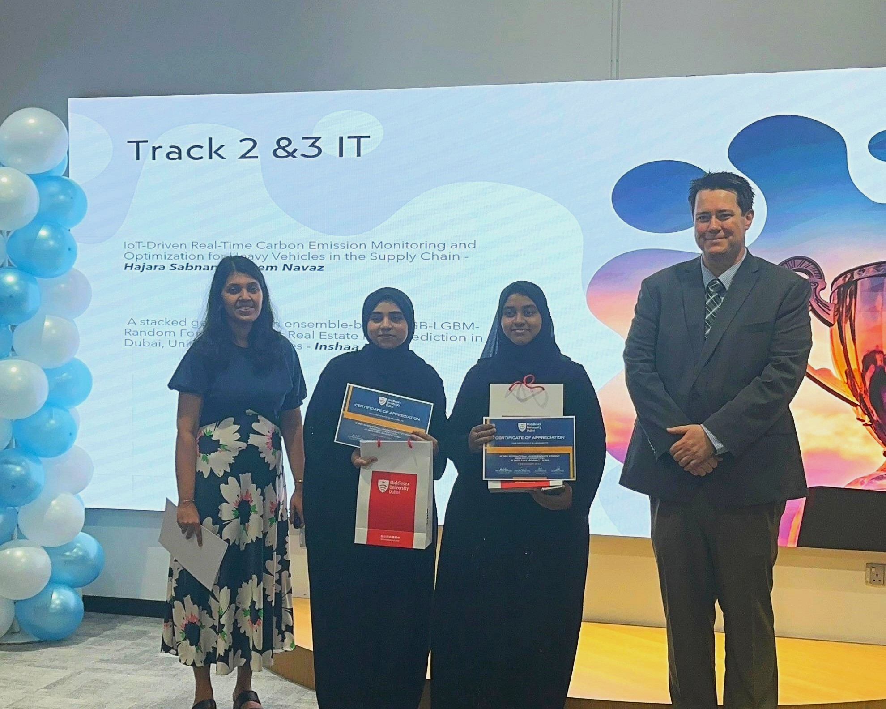
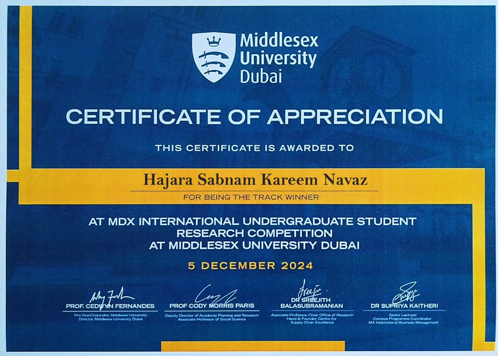

MDX International Undergraduate Student Research Competition 2024, held on December 5, 2024, at Middlesex University Dubai,
brought together students from various disciplines to present innovative research under the theme "Towards a Sustainable Future,"
aligned with the UN’s 2030 Agenda. The competition involved abstract submissions, followed by in-person presentations in the
finale, where selected students showcased their research.
I was honored to be awarded Track Winner – IT for my research paper, "IoT-Driven Real-Time Carbon Emission Monitoring and
Optimization for Heavy Vehicles in the Supply Chain." My research highlighted the overlooked impact of road freight transport
on carbon emissions and proposed an IoT-based framework for real-time monitoring, along with a machine learning model for
predictive maintenance. Representing Amity University Dubai was an incredible experience, and I am grateful to the organizers
and mentors for their support and insights.
Hajara Sabnam

Track Winner in MDX International Undergraduate Student Research Competition 2024

